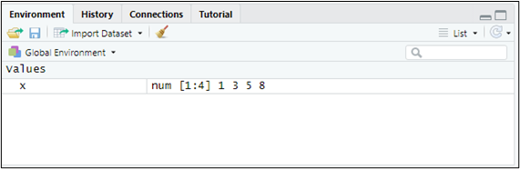

2 Almacenando y manipulando datos.

Figura 2.1. ¡Datos, datos!
2.1  Objetos. Datos.
Objetos. Datos.
Como vimos en el capítulo 1, tras ejecutar un sencillo script (o al escribir instrucciones directamente desde la consola), R es interactivo: responde a las entradas que recibe. Las entradas o expresiones pueden ser, básicamente:
Expresiones aritméticas.
Expresiones lógicas.
Llamadas a funciones.
Asignaciones.
Las expresiones actúan sobre objetos de R. Un objeto es una entidad que puede llevar asociadas ciertas características o metadatos, a los que llamamos atributos. Ni todos los objetos comparten los mismos atributos ni todos ellos cuentan necesariamente con atributos que los caractericen.
Los objetos más importantes en R son ciertas estructuras o contenedores diseñados para almacenar elementos:
Vectores.
Matrices.
Listas.
Data frames.
Factores.
Los elementos almacenados en los objetos se agrupan en clases. Entre ellas destacan las referidas a datos, que pueden presentar distintos modos: logical (verdadero/falso), numeric (números) o character (cadena de texto). El modo numeric admite, además, dos tipos: integer (número entero) y double (número real). En los modos logical y character, modo y tipo coinciden.
Profundicemos un poco en algunos de estos contenedores. Para ello, situémonos en el proyecto que creamos en el capítulo anterior (proyecto “explora”) y retomemos el script que preparamos allí mismo (script “explorando.R”, alojado en la carpeta de dicho proyecto).
2.1.1  Vectores.
Vectores.
Los vectores son conjuntos de elementos de la misma clase. Definamos, por ejemplo, el vector x = (1,3,5,8). Para ello escribiremos en nuestro script:
x <- c(1,3,5,8)Ejecutamos la línea situando el cursor en cualquier punto de ella, dentro del script, y pulsando a la vez las teclas Control + Enter (o haciendo clic en el botón Run del editor). Ya tenemos en memoria nuestro primer objeto de tipo vector. Conviene reparar en que acabamos de realizar una asignación: una flecha formada por los signos “<” y “-” traslada al vector llamado “x” los elementos 1, 3, 5 y 8.
Para ver su contenido basta con escribir en la consola (o en el script) el nombre del vector, “x”. El resultado será:
## [1] 1 3 5 8Si además dirigimos la mirada a la ventana superior derecha de RStudio, comprobaremos que el Global Environment —la ventana que recoge los objetos que R mantiene en memoria— muestra nuestro vector e indica que su modo es numérico:

Figura 2.2. Nuestro vector en memoria.
Si lo que buscamos es un vector de números consecutivos del 2 al 6, basta con ejecutar en la consola (o escribir y ejecutar en el script):
y <- c(2:6)Al escribir el nombre del vector “y” en la consola obtendremos:
y## [1] 2 3 4 5 6Para conocer la longitud de un vector recurriremos a la función length(). Así, length(y) devolverá el valor 5, pues “y” contiene cinco elementos. Escribamos en el script y ejecutemos:
length(y)## [1] 5Un vector puede albergar, además de números, caracteres o cadenas alfanuméricas, siempre entrecomilladas (lo esencial es que todos los elementos pertenezcan a la misma clase). Sirva de ejemplo el vector “genero” (¡evitemos las tildes al nombrar los objetos o podemos encontrarnos con problemas!). Si ejecutamos estas dos líneas de código:
genero<-c("Mujer","Hombre")
generoSe habrá creado el vector “genero”:
## [1] "Mujer" "Hombre"La función class() nos indica la clase de los elementos almacenados en el vector:
class(genero)## [1] "character"Cuando falta un dato en un vector, escribiremos “NA” (not available, no disponible). Por ejemplo, si no dispusiéramos del tercer dato del vector “Z”, lo definiríamos así:
Z <- c(1,2,NA,2,8)Para seleccionar un elemento concreto de un vector indicaremos, entre corchetes, la posición que ocupa. Así, para recuperar el valor del tercer elemento del vector “x” haremos:
x[3]## [1] 5Si lo que queremos es mostrar los elementos del vector “x” comprendidos entre el 2º y el 4º:
x[2:4]## [1] 3 5 8Por último, para mostrar en pantalla elementos salteados —el 1º y el 4º, pongamos por caso— recurriremos, dentro de los corchetes, a la función c(), que recoge las posiciones seleccionadas:
x[c(1,4)]## [1] 1 8
2.1.2 Matrices.
Las matrices son, internamente, vectores a los que R añade dos atributos: el número de filas y el número de columnas. Se definen mediante la función matrix(). Por ejemplo, para construir la matriz “a”:
\[ \begin{pmatrix} 1 & 4 & 7 \\ 2 & 5 & 8 \\ 3 & 6 & 9 \end{pmatrix} \]
Tendremos que escribir:
a <- matrix(c(1,2,3,4,5,6,7,8,9),nrow=3)
a## [,1] [,2] [,3]
## [1,] 1 4 7
## [2,] 2 5 8
## [3,] 3 6 9El número de filas se fija con el argumento nrow =; como el total de elementos es conocido, al indicar las filas queda determinado también el número de columnas. De forma equivalente, podríamos haber fijado las columnas con ncol =.
Como vemos, R “corta” el vector por columnas de forma predeterminada. Si lo preferimos, puede hacerlo por filas añadiendo a matrix() el argumento byrow = TRUE, si bien en nuestro ejemplo eso nos devolvería la traspuesta de la matriz que pretendemos almacenar.
Las dimensiones (número de filas y de columnas) de la matriz pueden obtenerse mediante la función dim():
dim(a)## [1] 3 3Esto es, 3 filas y 3 columnas.
Para seleccionar elementos concretos de una matriz emplearemos de nuevo los corchetes, esta vez con dos posiciones separadas por una coma: [rango de filas, rango de columnas]. Si dejamos en blanco el espacio situado entre el corchete de apertura y la coma, estaremos indicando que nos interesan todas las filas; y si no escribimos nada entre la coma y el corchete de cierre, que nos quedamos con todas las columnas. Veamos varios ejemplos de código, acompañados del resultado que devuelve la consola:
a[2,3]## [1] 8
a[1:2,2:3] ## [,1] [,2]
## [1,] 4 7
## [2,] 5 8
a[,c(1,3)]## [,1] [,2]
## [1,] 1 7
## [2,] 2 8
## [3,] 3 9
a[c(1,3),]## [,1] [,2] [,3]
## [1,] 1 4 7
## [2,] 3 6 9Tanto en vectores como en matrices, la suma y la diferencia funcionan sin mayor complicación. El producto, en cambio, merece una advertencia: la expresión a*a no realiza el producto matricial, sino la multiplicación elemento a elemento:
a*aEl resultado es, en este caso, el cuadrado de cada número, pues multiplicamos la matriz “a” por sí misma:
## [,1] [,2] [,3]
## [1,] 1 16 49
## [2,] 4 25 64
## [3,] 9 36 81Para obtener el verdadero producto matricial deberemos escribir:
a%*%a## [,1] [,2] [,3]
## [1,] 30 66 102
## [2,] 36 81 126
## [3,] 42 96 150
2.1.3 Data frames.
Un data frame es un objeto que almacena datos con la estructura propia de la clase data.frame: en las filas se disponen los distintos casos o sujetos y, en las columnas, las variables. De ahí se derivan algunos rasgos característicos:
Se asemeja a una matriz, pues también tiene dos dimensiones: podemos acceder a sus elementos con corchetes, disponemos de nombres para filas y columnas, y podemos operar con sus datos.
Cada columna tiene un nombre, de manera que podemos acceder a una columna concreta con el símbolo
$. Todas las columnas (variables) son vectores con la misma longitud.Cada columna puede ser un vector numérico, factor, de tipo carácter o lógico.
Construyamos, por ejemplo, el data frame “datos”, con tres variables —“peso”, “altura” y “color de ojos”, a las que llamaremos “Peso”, “Altura” y “Cl.ojos”— referidas a 3 individuos o casos. Una posibilidad consiste en definir primero las tres variables como vectores y reunirlas después mediante la función data.frame():
Peso<-c(68,75,88)
Altura<-c(1.6,1.8,1.9)
Cl.ojos<-c("azules","marrones","marrones")
datos<-data.frame(Peso,Altura,Cl.ojos)Si ahora ejecutamos una línea con el nombre de nuestro data frame, la consola nos devolverá su contenido:
datos## Peso Altura Cl.ojos
## 1 68 1.6 azules
## 2 75 1.8 marrones
## 3 88 1.9 marronesPara conocer los nombres de las variables (esto es, el de cada columna) recurriremos a la función names():
names(datos)Obteniéndose:
## [1] "Peso" "Altura" "Cl.ojos"Para obtener únicamente los datos de la columna (variable) color de ojos escribiremos datos$Cl.ojos:
datos$Cl.ojos## [1] "azules" "marrones" "marrones"Y para los de peso, datos$Peso:
datos$Peso## [1] 68 75 88Para conocer el número de filas y de columnas de una hoja de datos utilizaremos las funciones nrow() y ncol():
nrow(datos)## [1] 3
ncol(datos)## [1] 3Para seleccionar elementos de un data frame podemos seguir las mismas reglas que en las matrices: el número de la fila identifica al individuo y el de la columna, a la variable. Para elegir una variable disponemos, además, de la vía que ya conocemos: su nombre precedido del nombre del data frame y del signo $. Así, si ejecutamos:
datos[,2]## [1] 1.6 1.8 1.9
datos$Altura## [1] 1.6 1.8 1.9Obtenemos el mismo resultado.
2.1.4 Factores.
En R, un factor es un tipo especial de objeto destinado a representar datos categóricos: datos que no son magnitudes continuas, sino que pertenecen a un conjunto limitado de categorías, también llamadas niveles. Pensemos en el vector “Cl.ojos” que creamos hace un momento: se trata de un vector de tipo carácter que, para R, todavía no es un factor.
Para convertirlo en un objeto de la clase “factor”, podemos ejecutar:
Cl.ojosF <- factor(Cl.ojos)En el Global Environment aparece ya el objeto “Cl.ojosF”, de tipo factor. Si mostramos ambos objetos:
Cl.ojos## [1] "azules" "marrones" "marrones"
Cl.ojosF## [1] azules marrones marrones
## Levels: azules marronesComprobamos que “Cl.ojosF” es algo más que un vector de elementos de tipo carácter: es una variable cuyos elementos solo pueden adoptar dos valores categóricos —los niveles “azules” y “marrones”—, que podrán aparecer una vez, repetirse o incluso no llegar a aparecer.
¿Por qué es necesario, a veces, transformar los datos “categóricos” en “factores”?
Ahorro de memoria: internamente, en lugar de almacenar “marrones” muchas veces, R guarda un número que representa a esa categoría (por ejemplo, 1 = marrones, 2 = azules).
Orden y niveles: podemos indicar si las categorías siguen una escala ordinal. Supongamos que manejamos las calificaciones “Suspenso”, “Aprobado”, “Notable” y “Sobresaliente”. Si las guardamos como factor ordenado, R sabrá que Suspenso < Aprobado < Notable < Sobresaliente, lo que nos permitirá comparar, ordenar, etc.
notas <- factor(
c("Aprobado", "Notable", "Sobresaliente", "Suspenso"),
levels = c("Suspenso", "Aprobado", "Notable", "Sobresaliente"),
ordered = TRUE
)
notas## [1] Aprobado Notable Sobresaliente Suspenso
## Levels: Suspenso < Aprobado < Notable < Sobresaliente- Modelos estadísticos: numerosos métodos de R reconocen automáticamente los factores como variables cualitativas y les aplican el tratamiento adecuado (tablas de contingencia, regresiones con variables categóricas, etc.).
En síntesis, un factor es una suerte de etiqueta inteligente para las categorías, que permite trabajar con datos cualitativos de forma más ordenada y más provechosa para el análisis.
2.1.5 Listas.
Por último, una lista es un tipo de objeto capaz de albergar en su interior prácticamente cualquier cosa:
números
textos
vectores
matrices
data frames
otras listas
Podemos imaginarla como una caja organizadora con muchos compartimentos, en cada uno de los cuales cabe un objeto distinto, sea cual sea su naturaleza. Creemos, por ejemplo, la lista “mi_lista”:
mi_lista <- list(
nombre = "María",
edad = 21,
notas = c(8.5, 9.0, 7.2),
aprobado = TRUE
)
mi_lista## $nombre
## [1] "María"
##
## $edad
## [1] 21
##
## $notas
## [1] 8.5 9.0 7.2
##
## $aprobado
## [1] TRUELa lista queda almacenada en el Global Environment. Si solo queremos ver su tercer elemento, podemos referirnos a él por su nombre o por la posición que ocupa, en este caso con corchetes dobles:
mi_lista$notas## [1] 8.5 9.0 7.2
mi_lista[[3]]## [1] 8.5 9.0 7.2Las listas son las estructuras de almacenamiento más flexibles de R y se emplean con frecuencia para organizar y empaquetar resultados complejos.
En la práctica, la estructura con la que más trabajaremos a lo largo del libro es el data frame: cada columna es un vector (numérico o factor) y cada fila un caso de la muestra. Además, cuando apliquemos técnicas estadísticas, los resultados de los modelos se devolverán habitualmente empaquetados en listas, ya que contienen elementos de distinta naturaleza (coeficientes, residuos, estadísticos de bondad de ajuste, etc.). De este modo, los cinco tipos de objetos que acabamos de presentar no son compartimentos estancos: conviven y se complementan en cualquier análisis real.
2.2  Importando datos.
Importando datos.
Lo habitual no es teclear los datos, como hemos hecho hasta ahora, sino importarlos a R desde algún contenedor externo: un archivo de texto, una hoja de cálculo, una base de datos… En nuestro caso los traeremos desde Microsoft® Excel®. Cerremos, pues, el script que hemos ido construyendo en los apartados anteriores (recordemos guardarlo antes si queremos conservarlo), sin salir del proyecto “explora” en el que venimos trabajando. Acto seguido iremos a la carpeta del proyecto y guardaremos en ella los dos archivos de esta práctica, cuyos enlaces de descarga figuran en la sección final del capítulo:
Un archivo de Microsoft® Excel® llamado “interestelar_100.xlsx”
Un script con las instrucciones que vamos a mostrar a continuación, y que se llama “explora_rstars.R”
Si abrimos el archivo de Microsoft® Excel® “interestelar_100.xlsx”, comprobaremos que consta de tres hojas: la primera recoge un aviso sobre el uso exclusivo que debe darse a los datos; la segunda describe las variables consideradas; y la tercera (hoja “Datos”) contiene la información que vamos a importar desde RStudio. Se trata de variables económico-financieras y de otra índole, referidas a una muestra de empresas dedicadas al transporte interestelar de mercancías.
Abramos ahora el script “explora_rstars.R” con File → Open File… (o haciendo clic sobre el archivo en la ventana inferior derecha de RStudio, pestaña “Files”). Este script contiene el programa que iremos ejecutando a lo largo de la práctica.
La primera línea / instrucción en los scripts suele ser:
## Importando datos de las empresas R-Stars
# Limpiando el Global Environment
rm(list = ls())Esta instrucción persigue limpiar el Global Environment (la memoria) de los objetos que hayan quedado de sesiones de trabajo anteriores.
A continuación suelen cargarse los paquetes necesarios para ejecutar el código. En rigor, pueden cargarse en cualquier punto del script, siempre que sea antes de ejecutar una línea que requiera alguno de los elementos que contienen.
Naturalmente, para cargar o activar un paquete este debe haberse instalado antes en la máquina en la que trabajamos. Si aún no hemos instalado readxl y gtExtras, habrá que hacerlo siguiendo el procedimiento descrito en la sección de Paquetes del capítulo anterior (sección 1.7); de lo contrario, R nos devolverá un error.
Para importar los datos alojados en el archivo de Microsoft® Excel® “interestelar_100.xlsx”, el código que podemos emplear es:
# DATOS
interestelar_100 <- read_excel("interestelar_100.xlsx", sheet = "Datos", na = c("n.d."))La función encargada de importar los datos es read_excel(), del paquete readxl.
Conviene detenerse en un detalle importante. Si la hoja de cálculo señala los valores perdidos mediante alguna anotación —“n.d.” (no disponible), por ejemplo—, debemos incluir el argumento na = para indicar a R qué contenidos de las celdas ha de traducir como valores faltantes. Si las celdas sin dato estuvieran siempre en blanco, este argumento resultaría innecesario.
Volviendo a nuestro ejemplo, en el Global Environment aparece ya un objeto: una estructura de datos de tipo data frame, llamada “interestelar_100”, que contiene 104 filas (una por empresa) y 29 columnas, una por cada variable almacenada en el archivo de Microsoft® Excel®. Cinco de esas variables son de naturaleza cualitativa y están formadas por cadenas de caracteres.
Puede explorarse el contenido del data frame y los principales estadísticos con la función summary():
summary (interestelar_100)## NOMBRE SEDE GALAXIA ACTIVO
## Length:104 Length:104 Length:104 Min. : 17.55
## Class :character Class :character Class :character 1st Qu.: 51.16
## Mode :character Mode :character Mode :character Median : 159.08
## Mean : 259.98
## 3rd Qu.: 231.86
## Max. :2966.52
## NA's :1
##
## FPIOS ING MARGEN RES
## Min. : 8.67 Min. : 19.43 Min. :17.42 Min. : 11.02
## 1st Qu.: 22.46 1st Qu.: 44.33 1st Qu.:48.96 1st Qu.: 26.55
## Median : 59.81 Median : 103.91 Median :56.72 Median : 54.61
## Mean : 115.64 Mean : 238.23 Mean :60.35 Mean : 128.22
## 3rd Qu.: 109.67 3rd Qu.: 254.88 3rd Qu.:73.44 3rd Qu.: 167.98
## Max. :1441.44 Max. :2313.99 Max. :95.00 Max. :1189.86
## NA's :1
##
## SOLVENCIA ACTCOR PASCOR LIQUIDEZ
## Min. :123.1 Min. : 6.81 Min. : 6.66 Min. :0.2253
## 1st Qu.:160.4 1st Qu.: 17.80 1st Qu.: 20.49 1st Qu.:0.4962
## Median :174.7 Median : 23.57 Median : 59.92 Median :0.6984
## Mean :179.5 Mean : 64.64 Mean : 107.89 Mean :0.6614
## 3rd Qu.:194.0 3rd Qu.: 58.27 3rd Qu.: 101.88 3rd Qu.:0.8272
## Max. :325.3 Max. :889.96 Max. :1143.81 Max. :1.2580
##
## APALANCA RENECO RENFIN EMPLEA
## Min. : 44.38 Min. :28.04 Min. : 70.18 Min. : 7.00
## 1st Qu.:106.20 1st Qu.:45.02 1st Qu.:101.69 1st Qu.: 22.00
## Median :133.73 Median :50.43 Median :119.24 Median : 30.00
## Mean :145.60 Mean :52.38 Mean :121.54 Mean : 35.78
## 3rd Qu.:164.55 3rd Qu.:59.41 3rd Qu.:139.48 3rd Qu.: 42.00
## Max. :433.55 Max. :93.85 Max. :262.25 Max. :100.00
## NA's :1 NA's :1 NA's :1
##
## FJUR FLOTA COSTOP CAPEX
## Length:104 Min. : 3.00 Min. : 0.98 Min. : 1.038
## Class :character 1st Qu.:15.00 1st Qu.: 14.78 1st Qu.: 5.474
## Mode :character Median :24.50 Median : 29.82 Median : 11.155
## Mean :27.35 Mean : 110.04 Mean : 39.395
## 3rd Qu.:40.00 3rd Qu.: 115.32 3rd Qu.: 34.084
## Max. :50.00 Max. :1124.13 Max. :1087.196
## NA's :1
##
## IMD EFLO RUTAS IDIG
## Min. : 0.4779 Length:104 Min. : 42.0 Min. : 0.6007
## 1st Qu.: 1.4395 Class :character 1st Qu.: 203.2 1st Qu.:10.7957
## Median : 4.9474 Mode :character Median : 327.5 Median :16.7092
## Mean : 16.3313 Mean : 397.7 Mean :18.1645
## 3rd Qu.: 19.7304 3rd Qu.: 411.2 3rd Qu.:24.8249
## Max. :202.4779 Max. :2915.0 Max. :60.8325
##
## IDIVERSE IFIDE GMEDRUT DIST
## Min. : 0.7737 Min. :26.44 Min. :0.005197 Min. : 0.1513
## 1st Qu.:13.0142 1st Qu.:37.32 1st Qu.:0.095229 1st Qu.: 18.3251
## Median :22.3920 Median :39.18 Median :0.198253 Median : 57.7865
## Mean :23.8114 Mean :39.39 Mean :0.334388 Mean : 164.9319
## 3rd Qu.:34.6776 3rd Qu.:40.40 3rd Qu.:0.520769 3rd Qu.: 197.3137
## Max. :71.3507 Max. :73.30 Max. :1.550435 Max. :2151.6418
## NA's :1 NA's :1 NA's :1 NA's :2
##
## BMAL
## Min. : 31.45
## 1st Qu.: 356.56
## Median : 1285.59
## Mean : 8292.13
## 3rd Qu.: 3206.33
## Max. :262555.82
## NA's :2Veremos desfilar las 29 variables acompañadas de algunos estadísticos básicos.
Observemos que R ha interpretado la primera columna como una variable cualitativa (un atributo) cuando, en realidad, no es una variable, sino el nombre de los individuos o casos. Para evitarlo, podemos redefinir el data frame indicándole que tome esa primera columna como los nombres de las filas:
interestelar_100 <- data.frame(interestelar_100, row.names = 1)En la línea anterior hemos asignado al data frame “interestelar_100” sus propios datos, pero advirtiendo a R de que la primera columna no es una variable, sino el nombre de los casos. Si repetimos ahora el summary():
summary (interestelar_100)## SEDE GALAXIA ACTIVO FPIOS
## Length:104 Length:104 Min. : 17.55 Min. : 8.67
## Class :character Class :character 1st Qu.: 51.16 1st Qu.: 22.46
## Mode :character Mode :character Median : 159.08 Median : 59.81
## Mean : 259.98 Mean : 115.64
## 3rd Qu.: 231.86 3rd Qu.: 109.67
## Max. :2966.52 Max. :1441.44
## NA's :1
##
## ING MARGEN RES SOLVENCIA
## Min. : 19.43 Min. :17.42 Min. : 11.02 Min. :123.1
## 1st Qu.: 44.33 1st Qu.:48.96 1st Qu.: 26.55 1st Qu.:160.4
## Median : 103.91 Median :56.72 Median : 54.61 Median :174.7
## Mean : 238.23 Mean :60.35 Mean : 128.22 Mean :179.5
## 3rd Qu.: 254.88 3rd Qu.:73.44 3rd Qu.: 167.98 3rd Qu.:194.0
## Max. :2313.99 Max. :95.00 Max. :1189.86 Max. :325.3
## NA's :1
##
## ACTCOR PASCOR LIQUIDEZ APALANCA
## Min. : 6.81 Min. : 6.66 Min. :0.2253 Min. : 44.38
## 1st Qu.: 17.80 1st Qu.: 20.49 1st Qu.:0.4962 1st Qu.:106.20
## Median : 23.57 Median : 59.92 Median :0.6984 Median :133.73
## Mean : 64.64 Mean : 107.89 Mean :0.6614 Mean :145.60
## 3rd Qu.: 58.27 3rd Qu.: 101.88 3rd Qu.:0.8272 3rd Qu.:164.55
## Max. :889.96 Max. :1143.81 Max. :1.2580 Max. :433.55
## NA's :1
##
## RENECO RENFIN EMPLEA FJUR
## Min. :28.04 Min. : 70.18 Min. : 7.00 Length:104
## 1st Qu.:45.02 1st Qu.:101.69 1st Qu.: 22.00 Class :character
## Median :50.43 Median :119.24 Median : 30.00 Mode :character
## Mean :52.38 Mean :121.54 Mean : 35.78
## 3rd Qu.:59.41 3rd Qu.:139.48 3rd Qu.: 42.00
## Max. :93.85 Max. :262.25 Max. :100.00
## NA's :1 NA's :1
##
## FLOTA COSTOP CAPEX IMD
## Min. : 3.00 Min. : 0.98 Min. : 1.038 Min. : 0.4779
## 1st Qu.:15.00 1st Qu.: 14.78 1st Qu.: 5.474 1st Qu.: 1.4395
## Median :24.50 Median : 29.82 Median : 11.155 Median : 4.9474
## Mean :27.35 Mean : 110.04 Mean : 39.395 Mean : 16.3313
## 3rd Qu.:40.00 3rd Qu.: 115.32 3rd Qu.: 34.084 3rd Qu.: 19.7304
## Max. :50.00 Max. :1124.13 Max. :1087.196 Max. :202.4779
## NA's :1
##
## EFLO RUTAS IDIG IDIVERSE
## Length:104 Min. : 42.0 Min. : 0.6007 Min. : 0.7737
## Class :character 1st Qu.: 203.2 1st Qu.:10.7957 1st Qu.:13.0142
## Mode :character Median : 327.5 Median :16.7092 Median :22.3920
## Mean : 397.7 Mean :18.1645 Mean :23.8114
## 3rd Qu.: 411.2 3rd Qu.:24.8249 3rd Qu.:34.6776
## Max. :2915.0 Max. :60.8325 Max. :71.3507
## NA's :1
##
## IFIDE GMEDRUT DIST BMAL
## Min. :26.44 Min. :0.005197 Min. : 0.1513 Min. : 31.45
## 1st Qu.:37.32 1st Qu.:0.095229 1st Qu.: 18.3251 1st Qu.: 356.56
## Median :39.18 Median :0.198253 Median : 57.7865 Median : 1285.59
## Mean :39.39 Mean :0.334388 Mean : 164.9319 Mean : 8292.13
## 3rd Qu.:40.40 3rd Qu.:0.520769 3rd Qu.: 197.3137 3rd Qu.: 3206.33
## Max. :73.30 Max. :1.550435 Max. :2151.6418 Max. :262555.82
## NA's :1 NA's :1 NA's :2 NA's :2Comprobamos que “NOMBRE” ha dejado de figurar como variable: en el Global Environment, el data frame “interestelar_100” conserva sus 104 observaciones (casos), pero ahora cuenta con 28 variables, una menos que antes.
Una forma visualmente más elegante de explorar el contenido del data frame consiste en emplear la función gt_plt_summary() del paquete gtExtras:
# visualizando el data frame de modo elegante con {gtExtras}
datos_df_graph <- gt_plt_summary(interestelar_100)El código asigna al nombre “datos_df_graph” (o al que prefiramos) una tabla gráfica con las variables que contiene el data frame —en este caso, “interestelar_100”—, junto con sus características y algunas medidas básicas, que varían según la tipología de cada variable. Bastará con invocar ese nombre para visualizarla:
datos_df_graphY el resultado será:
| interestelar_100 | ||||||
| 104 rows x 28 cols | ||||||
| Column | Plot Overview | Missing | Mean | Median | SD | |
|---|---|---|---|---|---|---|
SEDEKobol, Tierra, Arrakis, Fhloston Paradise, Naboo, Tatooine, Coruscant, Miranda, Mül, Pandora, Dagobah, Mann, Romulus, Endor, Klendathu, La Tierra (Final), Miller, Mustafar, Planet P, Qo'noS, Hoth, Júpiter, Vulcano, Zegema Beach, Caprica, LV-223, LV-426, Nueva Caprica and Risa |
0.0% | — | — | — | ||
GALAXIAGalaxia de Andrómeda, Gran Nube de Magallanes, Vía Láctea, Pequeña Nube de Magallanes and Galaxia del Triángulo |
0.0% | — | — | — | ||
| ACTIVO | 1.0% | 260.0 | 159.1 | 445.2 | ||
| FPIOS | 0.0% | 115.6 | 59.8 | 209.3 | ||
| ING | 0.0% | 238.2 | 103.9 | 370.8 | ||
| MARGEN | 1.0% | 60.3 | 56.7 | 16.9 | ||
| RES | 0.0% | 128.2 | 54.6 | 192.4 | ||
| SOLVENCIA | 0.0% | 179.5 | 174.7 | 30.7 | ||
| ACTCOR | 0.0% | 64.6 | 23.6 | 130.4 | ||
| PASCOR | 0.0% | 107.9 | 59.9 | 176.5 | ||
| LIQUIDEZ | 0.0% | 0.7 | 0.7 | 0.2 | ||
| APALANCA | 1.0% | 145.6 | 133.7 | 63.2 | ||
| RENECO | 1.0% | 52.4 | 50.4 | 11.4 | ||
| RENFIN | 0.0% | 121.5 | 119.2 | 32.8 | ||
| EMPLEA | 1.0% | 35.8 | 30.0 | 19.7 | ||
FJURSLG, SAG and CG |
0.0% | — | — | — | ||
| FLOTA | 0.0% | 27.3 | 24.5 | 13.8 | ||
| COSTOP | 1.0% | 110.0 | 29.8 | 192.7 | ||
| CAPEX | 0.0% | 39.4 | 11.2 | 110.5 | ||
| IMD | 0.0% | 16.3 | 4.9 | 26.7 | ||
EFLOANTIGUA, MADURA and RENOVADA |
0.0% | — | — | — | ||
| RUTAS | 0.0% | 397.7 | 327.5 | 376.2 | ||
| IDIG | 0.0% | 18.2 | 16.7 | 10.9 | ||
| IDIVERSE | 1.0% | 23.8 | 22.4 | 13.2 | ||
| IFIDE | 1.0% | 39.4 | 39.2 | 6.2 | ||
| GMEDRUT | 1.0% | 0.3 | 0.2 | 0.3 | ||
| DIST | 1.9% | 164.9 | 57.8 | 279.4 | ||
| BMAL | 1.9% | 8,292.1 | 1,285.6 | 33,732.4 | ||
Tabla 2.1
Antes de seguir manipulando nuestros datos, conviene recordar que R admite muchos otros formatos de importación. El paquete readr, por ejemplo, lee archivos de texto de tipo tabular (como los *.csv). El paquete haven recupera los datos almacenados en archivos de SPSS® (.sav), Stata® (.dta) o SAS® (.sas7bdat), entre otros. Y también es posible capturar información procedente de páginas web (archivos JSON o XML, o tablas HTML) o de bases de datos gestionadas con diversos sistemas (SQLite, MySQL, MariaDB, PostgreSQL, Oracle®).
2.3 El paquete {dplyr}.
2.3.1 El Tidyverse. Cargando {dplyr}.
El Tidyverse es un conjunto de paquetes que comparten una misma filosofía —el uso de ciertas estructuras gramaticales comunes— y que simplifican buena parte de las tareas y análisis que podrían acometerse con el lenguaje R estándar. Una obra excelente para profundizar en el Tidyverse es Wickham and Grolemund (2017).
Uno de esos paquetes es dplyr, que ofrece una gramática más sencilla que la del lenguaje R convencional para manipular las estructuras de datos conocidas como data frames.
Los data frames, como ya sabemos, son estructuras que almacenan los datos disponiendo las variables del análisis en columnas y los casos que conforman la muestra o población en filas.
Supongamos que seguimos trabajando dentro del proyecto “explora” que creamos anteriormente (véase el capítulo 1) y que continuamos con el script “explora_rstars.R”, con el que importamos los datos del archivo de Microsoft® Excel® “interestelar_100.xlsx”, que reunía información sobre 104 empresas de transporte interestelar de mercancías.
Damos por hecho, por tanto, que ya hemos ejecutado la primera parte del script —la importación de los datos y la corrección de la columna con los nombres de las filas— y que el data frame “interestelar_100” se encuentra almacenado en el Global Environment.
Retomemos el trabajo desde ese punto cargando el paquete dplyr (si aún no está instalado, procedamos como se indicó en la sección 1.7):
## dplyr
# Cargando dplyr
library (dplyr)Para comprender mejor la sintaxis de las funciones a las que da acceso dplyr, conviene retener tres ideas:
El primer argumento que tiene una función de dplyr es el data frame con el que se va a trabajar.
Los otros argumentos describen qué hay que hacer con el data frame especificado en el primer argumento. Es posible referirse a las columnas (variables) del data frame con su nombre, sin utilizar el operador $.
El valor de retorno es un nuevo data frame.
En los siguientes subapartados practicaremos con algunas de sus funciones principales.
2.3.2 Seleccionando columnas de un data frame.
La función clave de dplyr para seleccionar una o varias columnas (variables) de un data frame es la función select().
Imaginemos, por ejemplo, que queremos eliminar de nuestro data frame la variable FJUR (forma jurídica de la empresa), de tipo carácter. Bastará con ejecutar la siguiente asignación:
# Seleccionando variables
interestelar_100 <-select(interestelar_100, -FJUR)
summary (interestelar_100)## SEDE GALAXIA ACTIVO FPIOS
## Length:104 Length:104 Min. : 17.55 Min. : 8.67
## Class :character Class :character 1st Qu.: 51.16 1st Qu.: 22.46
## Mode :character Mode :character Median : 159.08 Median : 59.81
## Mean : 259.98 Mean : 115.64
## 3rd Qu.: 231.86 3rd Qu.: 109.67
## Max. :2966.52 Max. :1441.44
## NA's :1
##
## ING MARGEN RES SOLVENCIA
## Min. : 19.43 Min. :17.42 Min. : 11.02 Min. :123.1
## 1st Qu.: 44.33 1st Qu.:48.96 1st Qu.: 26.55 1st Qu.:160.4
## Median : 103.91 Median :56.72 Median : 54.61 Median :174.7
## Mean : 238.23 Mean :60.35 Mean : 128.22 Mean :179.5
## 3rd Qu.: 254.88 3rd Qu.:73.44 3rd Qu.: 167.98 3rd Qu.:194.0
## Max. :2313.99 Max. :95.00 Max. :1189.86 Max. :325.3
## NA's :1
##
## ACTCOR PASCOR LIQUIDEZ APALANCA
## Min. : 6.81 Min. : 6.66 Min. :0.2253 Min. : 44.38
## 1st Qu.: 17.80 1st Qu.: 20.49 1st Qu.:0.4962 1st Qu.:106.20
## Median : 23.57 Median : 59.92 Median :0.6984 Median :133.73
## Mean : 64.64 Mean : 107.89 Mean :0.6614 Mean :145.60
## 3rd Qu.: 58.27 3rd Qu.: 101.88 3rd Qu.:0.8272 3rd Qu.:164.55
## Max. :889.96 Max. :1143.81 Max. :1.2580 Max. :433.55
## NA's :1
##
## RENECO RENFIN EMPLEA FLOTA
## Min. :28.04 Min. : 70.18 Min. : 7.00 Min. : 3.00
## 1st Qu.:45.02 1st Qu.:101.69 1st Qu.: 22.00 1st Qu.:15.00
## Median :50.43 Median :119.24 Median : 30.00 Median :24.50
## Mean :52.38 Mean :121.54 Mean : 35.78 Mean :27.35
## 3rd Qu.:59.41 3rd Qu.:139.48 3rd Qu.: 42.00 3rd Qu.:40.00
## Max. :93.85 Max. :262.25 Max. :100.00 Max. :50.00
## NA's :1 NA's :1
##
## COSTOP CAPEX IMD EFLO
## Min. : 0.98 Min. : 1.038 Min. : 0.4779 Length:104
## 1st Qu.: 14.78 1st Qu.: 5.474 1st Qu.: 1.4395 Class :character
## Median : 29.82 Median : 11.155 Median : 4.9474 Mode :character
## Mean : 110.04 Mean : 39.395 Mean : 16.3313
## 3rd Qu.: 115.32 3rd Qu.: 34.084 3rd Qu.: 19.7304
## Max. :1124.13 Max. :1087.196 Max. :202.4779
## NA's :1
##
## RUTAS IDIG IDIVERSE IFIDE
## Min. : 42.0 Min. : 0.6007 Min. : 0.7737 Min. :26.44
## 1st Qu.: 203.2 1st Qu.:10.7957 1st Qu.:13.0142 1st Qu.:37.32
## Median : 327.5 Median :16.7092 Median :22.3920 Median :39.18
## Mean : 397.7 Mean :18.1645 Mean :23.8114 Mean :39.39
## 3rd Qu.: 411.2 3rd Qu.:24.8249 3rd Qu.:34.6776 3rd Qu.:40.40
## Max. :2915.0 Max. :60.8325 Max. :71.3507 Max. :73.30
## NA's :1 NA's :1
##
## GMEDRUT DIST BMAL
## Min. :0.005197 Min. : 0.1513 Min. : 31.45
## 1st Qu.:0.095229 1st Qu.: 18.3251 1st Qu.: 356.56
## Median :0.198253 Median : 57.7865 Median : 1285.59
## Mean :0.334388 Mean : 164.9319 Mean : 8292.13
## 3rd Qu.:0.520769 3rd Qu.: 197.3137 3rd Qu.: 3206.33
## Max. :1.550435 Max. :2151.6418 Max. :262555.82
## NA's :1 NA's :2 NA's :2En el Global Environment podemos verificar que el data frame ha pasado a tener una variable menos (27), pues hemos prescindido de FJUR. Como vemos, basta anteponer el guion “-” al nombre de una variable para eliminarla.
Supongamos ahora que solo deseamos visualizar tres variables del data frame “interestelar_100”: ACTIVO, FPIOS y LIQUIDEZ. Para ello ejecutaremos:
select(interestelar_100, ACTIVO, FPIOS, LIQUIDEZ)## ACTIVO FPIOS LIQUIDEZ
## hyperion star haulage 211.14 88.9400 0.5592011
## jovian logistics 220.56 78.9300 0.5358355
## sandworm freight 17.55 8.6700 0.9659574
## ripley interstellar freight 37.07 19.6300 0.8586790
## chakotay cargo systems 2158.69 971.4105 0.5963287
## dune dynamics 515.86 178.6400 0.4919417
## sith transport corp. 515.98 212.9600 0.6386439
## seven of nine logistics 477.80 215.0100 1.2580305
## moya cargo systems 520.29 169.4900 0.5264522
## travis star haulage 466.63 244.9200 0.4893415(Nota: solo mostramos aquí los 10 primeros casos del data frame).
Como no hemos asignado el resultado de la función a ningún nombre, R se limita a mostrarlo en pantalla, sin guardar objeto alguno en el Global Environment. Si, por el contrario, asignamos el select() a un nombre, se creará un data frame que lo llevará y que contendrá las variables seleccionadas:
interestelar_100A <-select(interestelar_100, ACTIVO, FPIOS, LIQUIDEZ)
summary (interestelar_100A)## ACTIVO FPIOS LIQUIDEZ
## Min. : 17.55 Min. : 8.67 Min. :0.2253
## 1st Qu.: 51.16 1st Qu.: 22.46 1st Qu.:0.4962
## Median : 159.08 Median : 59.81 Median :0.6984
## Mean : 259.98 Mean : 115.64 Mean :0.6614
## 3rd Qu.: 231.86 3rd Qu.: 109.67 3rd Qu.:0.8272
## Max. :2966.52 Max. :1441.44 Max. :1.2580
## NA's :1Podemos comprobar que en el Global Environment figura otro data frame, llamado “interestelar_100A”, con 3 variables y los mismos 104 casos.
2.3.3 Ordenando casos de un data frame.
Además de seleccionar columnas, las funciones de dplyr permiten ordenar los casos (filas) de un data frame según los valores de ciertas variables. La encargada de ello es arrange(), que ordena de modo ascendente salvo que se le indique lo contrario. Creemos, por ejemplo, el data frame “interestelar_100C” con las variables RENECO, EFLO y ACTIVO, y con los casos ordenados de menor a mayor valor de RENECO:
# Ordenando casos
interestelar_100C <- select(interestelar_100, RENECO, EFLO, ACTIVO)
interestelar_100C <- arrange(interestelar_100C, RENECO)
interestelar_100C## RENECO EFLO ACTIVO
## mustafar haulage 28.04152 MADURA 183.05
## mos eisley haulage 31.05354 MADURA 186.42
## forest moon freight 32.46888 MADURA 222.49
## kelvin universe movers 33.67418 ANTIGUA 43.03
## io star transport 34.26908 MADURA 498.00
## event horizon haulage 35.31742 MADURA 204.46
## chakotay cargo systems 37.09704 RENOVADA 2158.69
## tannhäuser freight 37.33466 MADURA 190.52
## mon calamari freight co. 37.73973 ANTIGUA 29.20
## darth vader logistics 38.20225 ANTIGUA 29.37(Nota: solo mostramos aquí los 10 primeros casos del data frame).
Para ordenar de modo descendente, en cambio, envolveremos el nombre de la variable en la función desc():
## RENECO EFLO ACTIVO
## jovian logistics 93.84748 MADURA 220.56
## sandworm freight 89.40171 ANTIGUA 17.55
## hyperion star haulage 79.68646 MADURA 211.14
## vulcan star freight 74.21537 MADURA 226.22
## shuttlepod movers 72.50491 MADURA 249.39
## sdf-1 freightworks 68.66035 ANTIGUA 36.95
## betazoid transport 68.44444 ANTIGUA 56.25
## dagobah freightlines 66.83549 RENOVADA 511.39
## super star logistics 66.25660 RENOVADA 490.17
## moya cargo systems 66.05547 RENOVADA 520.29(Nota: solo mostramos aquí los 10 primeros casos del data frame).
Cuando varios casos comparten el mismo valor en una variable, podemos añadir una segunda variable como criterio de desempate. Ordenemos, por ejemplo, las empresas según EFLO (categorización de la antigüedad promedio de la flota, con las categorías ANTIGUA, MADURA y RENOVADA). Al tratarse de una variable categórica, los casos se dispondrán por orden alfabético de la categoría a la que pertenecen; y, dentro de cada una de ellas, los ordenaremos de nuevo por RENECO, esta vez de mayor a menor:
## RENECO EFLO ACTIVO
## sandworm freight 89.40171 ANTIGUA 17.55
## sdf-1 freightworks 68.66035 ANTIGUA 36.95
## betazoid transport 68.44444 ANTIGUA 56.25
## solar flare logistics 65.27527 ANTIGUA 44.32
## jedha star movers 64.60270 ANTIGUA 57.01
## venator transport systems 62.71060 ANTIGUA 53.42
## orion intergalactic freight 62.26345 ANTIGUA 53.90
## eva star transport 62.24329 ANTIGUA 50.64
## atreides logistics 61.99449 ANTIGUA 43.52
## uhura cargo systems 60.28957 ANTIGUA 61.47(Nota: solo mostramos aquí los 10 primeros casos del data frame. Una vez agotados los casos con categoría “ANTIGUA” en EFLO, comenzarían a aparecer los de categoría “MADURA”, concretamente a partir de la posición 52).
2.3.4 El operador pipe.
Ahora que conocemos select() y arrange(), podemos apreciar un problema: cuando necesitamos combinar varias operaciones, el código anidado se vuelve difícil de leer. El operador pipe %>%, proporcionado por el paquete magrittr (que se carga automáticamente con dplyr), resuelve este problema permitiendo encadenar operaciones de forma legible: toma el resultado de la expresión a su izquierda y lo pasa como primer argumento de la función a su derecha. Así, en lugar de anidar funciones —lo que obliga a leer “de dentro hacia fuera”—, el código se lee de izquierda a derecha y de arriba abajo, como una secuencia de pasos.
Veamos un ejemplo. Ya sabemos seleccionar variables con select() y ordenar casos con arrange(). Si quisiéramos hacer ambas cosas a la vez, sin pipe habría que anidar las funciones:
# Sin pipe (lectura "de dentro hacia fuera"):
arrange(select(interestelar_100, RENECO, EFLO, ACTIVO), RENECO)Con el operador pipe, el mismo código se escribe así:
# Con pipe (lectura secuencial):
interestelar_100 %>%
select(RENECO, EFLO, ACTIVO) %>%
arrange(RENECO)La segunda versión se lee de un modo mucho más natural: “toma interestelar_100, selecciona esas tres variables y ordena por RENECO”. A lo largo del libro, utilizaremos habitualmente el operador pipe para construir secuencias de instrucciones.
Nota: Desde la versión 4.1, R incorpora un pipe nativo, |>, que funciona de forma muy similar a %>%. En este libro utilizaremos %>% por ser el más habitual en el ecosistema tidyverse, pero es posible encontrar |> en documentación y código más reciente.
2.3.5 Seleccionando casos de un data frame.
Además de seleccionar variables, dplyr permite quedarse con los casos que cumplen ciertas condiciones. De este cometido se encarga la función filter(). Si, por ejemplo, queremos retener las empresas con un resultado (variable RES) mayor o igual a 500 miles de PAVOs y mostrar en pantalla los valores de RES y RENECO, la instrucción será:
## RES RENECO
## chakotay cargo systems 800.81 37.09704
## hyperdrive express 1130.14 45.20668
## home one cargo 609.58 53.21612
## arrakis freight 1189.86 40.10962Un mismo filtro admite varias condiciones. Construyamos un nuevo data frame, “interestelar_100B”, que recoja las variables RES, RENECO y ACTIVO de aquellas empresas con un resultado mayor o igual a 500 miles de PAVOs y una rentabilidad económica (variable RENECO) inferior al 40%:
interestelar_100B <-select(filter(interestelar_100,
RES >= 500 & RENECO < 40),
RES, RENECO, ACTIVO)
interestelar_100B## RES RENECO ACTIVO
## chakotay cargo systems 800.81 37.09704 2158.69En el Global Environment aparecerá el data frame “interestelar_100B” con un único caso: la empresa que satisface ambas condiciones, enlazadas mediante el operador lógico “&”, equivalente a la conjunción “y” o, dicho de otro modo, a la intersección. El otro operador lógico de uso frecuente es la barra vertical “|”, que equivale a la conjunción “o”, esto es, a la unión.
Por su parte, los operadores de comparación más habituales al construir las condiciones son >, <, >=, <=, == (igual: atención, con dos símbolos de igualdad seguidos) y != (distinto).
2.3.6 Seleccionando casos por posición: slice().
Mientras que filter() selecciona casos según una condición lógica, la función slice() selecciona casos por su posición (número de fila). Por ejemplo, para obtener los 5 primeros casos del data frame:
## SEDE GALAXIA ACTIVO FPIOS ING
## hyperion star haulage Tierra Vía Láctea 211.14 88.9400 405.29
## jovian logistics Miranda Gran Nube de Magallanes 220.56 78.9300 644.59
## sandworm freight Kobol Pequeña Nube de Magallanes 17.55 8.6700 44.67
## ripley interstellar freight Mann Pequeña Nube de Magallanes 37.07 19.6300 25.45
## chakotay cargo systems Romulus Galaxia del Triángulo 2158.69 971.4105 1786.00
## MARGEN RES SOLVENCIA ACTCOR PASCOR LIQUIDEZ APALANCA
## hyperion star haulage 41.51348 168.25 172.78 50.960 91.6500 0.5592011 137.40
## jovian logistics 32.11189 206.99 155.73 55.250 106.2225 0.5358355 179.44
## sandworm freight 35.12424 15.69 197.64 6.810 6.6600 0.9659574 102.42
## ripley interstellar freight 59.52849 15.15 212.56 11.180 13.0800 0.8586790 88.84
## chakotay cargo systems 44.83819 800.81 125.77 647.607 890.4596 0.5963287 388.00
## RENECO RENFIN EMPLEA FLOTA COSTOP CAPEX IMD
## hyperion star haulage 79.68646 189.17248 35 14 237.04 19.380235 18.422000
## jovian logistics 93.84748 262.24503 24 25 437.60 33.869023 61.914877
## sandworm freight 89.40171 180.96886 7 8 28.98 1.038288 1.441949
## ripley interstellar freight 40.86863 77.17779 19 13 10.30 3.490783 1.101115
## chakotay cargo systems 37.09704 82.43786 65 46 985.19 124.669222 56.063919
## EFLO RUTAS IDIG IDIVERSE IFIDE GMEDRUT DIST
## hyperion star haulage MADURA 244 13.740744 11.715023 26.44375 0.689549180 38.35032
## jovian logistics MADURA 406 27.434229 22.392005 29.77401 0.509827586 1006.90062
## sandworm freight ANTIGUA 70 2.318556 3.958736 30.85507 0.224142857 33.28985
## ripley interstellar freight ANTIGUA 2915 4.446463 71.350741 40.12974 0.005197256 379.05223
## chakotay cargo systems RENOVADA 1229 42.719724 54.368150 64.26013 0.651594793 928.84218
## BMAL
## hyperion star haulage 4387.18643
## jovian logistics 205.57143
## sandworm freight 471.31488
## ripley interstellar freight 39.96811
## chakotay cargo systems 862.15938dplyr ofrece además variantes muy útiles de slice(). Por ejemplo, slice_head() y slice_tail() seleccionan las primeras o últimas n filas, y slice_max() y slice_min() seleccionan los casos con los valores más altos o más bajos de una variable:
# Las 3 empresas con mayor rentabilidad económica
interestelar_100 %>% slice_max(RENECO, n = 3)
# Las 3 empresas con menor resultado
interestelar_100 %>% slice_min(RES, n = 3)## RENECO RES ACTIVO
## jovian logistics 93.84748 206.99 220.56
## sandworm freight 89.40171 15.69 17.55
## hyperion star haulage 79.68646 168.25 211.14(Nota: mostramos aquí únicamente el resultado de la primera instrucción y, para facilitar la lectura, solo tres de sus variables).
2.3.7 Cambiando el nombre de las variables de un data frame.
dplyr dispone de una función que permite cambiar con comodidad el nombre de una variable o columna de un data frame: rename(). Si queremos sustituir el nombre SOLVENCIA por SOLVE, bastará con ejecutar:
# Renombrando variables
interestelar_100 <- rename(interestelar_100, SOLVE = SOLVENCIA)Si desplegamos el data frame “interestelar_100” en el Global Environment, comprobaremos que la variable SOLVENCIA ha desaparecido y que en su lugar figura SOLVE, naturalmente con los mismos datos. Conviene retener el orden: a la izquierda de la igualdad se escribe el nombre nuevo y, a la derecha, el antiguo. Un mismo rename() puede cambiar el nombre de varias variables, separando con comas las igualdades correspondientes.
2.3.8 Añadiendo variables como transformación de otras variables en un data frame.
El paquete dplyr permite además incorporar al data frame variables nuevas, obtenidas al transformar las variables ya existentes. De ello se ocupa la función mutate().
Imaginemos que necesitamos calcular el cociente entre el resultado obtenido y el activo. Llamaremos RATIO a esta nueva variable, y el código será:
# Añadiendo variables como transformacion de otras variables
interestelar_100 <- mutate (interestelar_100, RATIO = RES / ACTIVO)
summary(interestelar_100)## SEDE GALAXIA ACTIVO FPIOS
## Length:104 Length:104 Min. : 17.55 Min. : 8.67
## Class :character Class :character 1st Qu.: 51.16 1st Qu.: 22.46
## Mode :character Mode :character Median : 159.08 Median : 59.81
## Mean : 259.98 Mean : 115.64
## 3rd Qu.: 231.86 3rd Qu.: 109.67
## Max. :2966.52 Max. :1441.44
## NA's :1
##
## ING MARGEN RES SOLVE
## Min. : 19.43 Min. :17.42 Min. : 11.02 Min. :123.1
## 1st Qu.: 44.33 1st Qu.:48.96 1st Qu.: 26.55 1st Qu.:160.4
## Median : 103.91 Median :56.72 Median : 54.61 Median :174.7
## Mean : 238.23 Mean :60.35 Mean : 128.22 Mean :179.5
## 3rd Qu.: 254.88 3rd Qu.:73.44 3rd Qu.: 167.98 3rd Qu.:194.0
## Max. :2313.99 Max. :95.00 Max. :1189.86 Max. :325.3
## NA's :1
##
## ACTCOR PASCOR LIQUIDEZ APALANCA
## Min. : 6.81 Min. : 6.66 Min. :0.2253 Min. : 44.38
## 1st Qu.: 17.80 1st Qu.: 20.49 1st Qu.:0.4962 1st Qu.:106.20
## Median : 23.57 Median : 59.92 Median :0.6984 Median :133.73
## Mean : 64.64 Mean : 107.89 Mean :0.6614 Mean :145.60
## 3rd Qu.: 58.27 3rd Qu.: 101.88 3rd Qu.:0.8272 3rd Qu.:164.55
## Max. :889.96 Max. :1143.81 Max. :1.2580 Max. :433.55
## NA's :1
##
## RENECO RENFIN EMPLEA FLOTA
## Min. :28.04 Min. : 70.18 Min. : 7.00 Min. : 3.00
## 1st Qu.:45.02 1st Qu.:101.69 1st Qu.: 22.00 1st Qu.:15.00
## Median :50.43 Median :119.24 Median : 30.00 Median :24.50
## Mean :52.38 Mean :121.54 Mean : 35.78 Mean :27.35
## 3rd Qu.:59.41 3rd Qu.:139.48 3rd Qu.: 42.00 3rd Qu.:40.00
## Max. :93.85 Max. :262.25 Max. :100.00 Max. :50.00
## NA's :1 NA's :1
##
## COSTOP CAPEX IMD EFLO
## Min. : 0.98 Min. : 1.038 Min. : 0.4779 Length:104
## 1st Qu.: 14.78 1st Qu.: 5.474 1st Qu.: 1.4395 Class :character
## Median : 29.82 Median : 11.155 Median : 4.9474 Mode :character
## Mean : 110.04 Mean : 39.395 Mean : 16.3313
## 3rd Qu.: 115.32 3rd Qu.: 34.084 3rd Qu.: 19.7304
## Max. :1124.13 Max. :1087.196 Max. :202.4779
## NA's :1
##
## RUTAS IDIG IDIVERSE IFIDE
## Min. : 42.0 Min. : 0.6007 Min. : 0.7737 Min. :26.44
## 1st Qu.: 203.2 1st Qu.:10.7957 1st Qu.:13.0142 1st Qu.:37.32
## Median : 327.5 Median :16.7092 Median :22.3920 Median :39.18
## Mean : 397.7 Mean :18.1645 Mean :23.8114 Mean :39.39
## 3rd Qu.: 411.2 3rd Qu.:24.8249 3rd Qu.:34.6776 3rd Qu.:40.40
## Max. :2915.0 Max. :60.8325 Max. :71.3507 Max. :73.30
## NA's :1 NA's :1
##
## GMEDRUT DIST BMAL RATIO
## Min. :0.005197 Min. : 0.1513 Min. : 31.45 Min. :0.2804
## 1st Qu.:0.095229 1st Qu.: 18.3251 1st Qu.: 356.56 1st Qu.:0.4479
## Median :0.198253 Median : 57.7865 Median : 1285.59 Median :0.5036
## Mean :0.334388 Mean : 164.9319 Mean : 8292.13 Mean :0.5230
## 3rd Qu.:0.520769 3rd Qu.: 197.3137 3rd Qu.: 3206.33 3rd Qu.:0.5941
## Max. :1.550435 Max. :2151.6418 Max. :262555.82 Max. :0.9385
## NA's :1 NA's :2 NA's :2 NA's :1Dentro de mutate() podemos apoyarnos en funciones procedentes de otros paquetes de R. Si, por ejemplo, queremos construir la variable ACTIVOS_ACUM, que recoge el activo acumulado de las empresas empezando por la de menor tamaño, recurriremos a la función cumsum() del paquete {base}:
interestelar_100 <- arrange(interestelar_100, ACTIVO)
interestelar_100 <- mutate (interestelar_100, ACTIVOS_ACUM = cumsum(ACTIVO))
select(interestelar_100, ACTIVO, ACTIVOS_ACUM)Podemos verificar que la variable ACTIVOS_ACUM se ha integrado ya en el data frame:
## ACTIVO ACTIVOS_ACUM
## sandworm freight 17.55 17.55
## mon calamari freight co. 29.20 46.75
## darth vader logistics 29.37 76.12
## sdf-1 freightworks 36.95 113.07
## ripley interstellar freight 37.07 150.14
## gungan haulage co. 40.06 190.20
## x-wing deliveries 40.35 230.55
## kelvin universe movers 43.03 273.58
## quantum freightlines 43.26 316.84
## atreides logistics 43.52 360.36(Nota: solo mostramos aquí los 10 primeros casos del data frame).
Veamos un último ejemplo de variable creada a partir de otras. Construiremos ahora DIM (dimensión), una variable categórica, cuyos valores son cadenas de caracteres. DIM tomará el valor “ALTA” en las empresas con un ACTIVO mayor o igual que 216 miles de PAVOs; “MEDIA” en aquellas cuyo ACTIVO sea menor que 216 miles de PAVOs y mayor o igual que 54 miles de PAVOs; y “REDUCIDA” en las que no alcancen los 54 miles de PAVOs. Para obtener esta clasificación de forma automática emplearemos la función cut(), del paquete {base}:
interestelar_100 <- mutate(interestelar_100,
DIM = cut(ACTIVO,
breaks = c(-Inf, 54, 216, Inf),
labels = c("REDUCIDA", "MEDIA", "ALTA")))
select(interestelar_100, ACTIVO, DIM)Reparemos en que cut(), anidada dentro del mutate() de dplyr, recibe a su vez varios argumentos: la variable numérica de referencia (ACTIVO); breaks =, donde fijamos los cortes que delimitan los intervalos en que se repartirán los casos (de menos infinito a 54, de 54 a 216 y de 216 a más infinito); y labels =, que recoge la etiqueta que adoptará la nueva variable DIM según el intervalo en el que caiga cada caso de la muestra:
## ACTIVO DIM
## sandworm freight 17.55 REDUCIDA
## mon calamari freight co. 29.20 REDUCIDA
## darth vader logistics 29.37 REDUCIDA
## sdf-1 freightworks 36.95 REDUCIDA
## ripley interstellar freight 37.07 REDUCIDA
## gungan haulage co. 40.06 REDUCIDA
## x-wing deliveries 40.35 REDUCIDA
## kelvin universe movers 43.03 REDUCIDA
## quantum freightlines 43.26 REDUCIDA
## atreides logistics 43.52 REDUCIDA(Nota: solo mostramos aquí los 10 primeros casos del data frame).
Este mismo código gana legibilidad si recurrimos al operador pipe %>% que presentamos unas páginas atrás:
interestelar_100 <- interestelar_100 %>%
mutate(DIM = cut(ACTIVO,
breaks = c(-Inf, 54, 216, Inf),
labels = c("REDUCIDA", "MEDIA", "ALTA")))
interestelar_100 %>% select(ACTIVO, DIM)La lectura es ahora secuencial: “toma interestelar_100, crea la variable DIM con cut() y guarda el resultado”. En la segunda línea: “toma interestelar_100 y muestra las variables ACTIVO y DIM”.
2.3.9 Extrayendo y sintetizando información de las variables de un data frame.
dplyr ofrece también la posibilidad de extraer y sintetizar, mediante medidas, la información de las variables que alberga un data frame. De ello se encarga la función summarise(). A modo de ejemplo, calculemos la rentabilidad financiera media de las 104 empresas:
#Extrayendo información de las variables de un data frame
summarise(interestelar_100, RENFIN_media = mean(RENFIN)) ## RENFIN_media
## 1 121.5434En muchas ocasiones resulta muy útil combinar summarise() con group_by(), que divide previamente el conjunto de casos en grupos definidos por una de las variables. Para ilustrarlo aprovecharemos la recién creada DIM: formaremos tres grupos de empresas y calcularemos después la rentabilidad media de cada uno:
## # A tibble: 4 × 2
## DIM RENFIN_media
## <fct> <dbl>
## 1 REDUCIDA 125.
## 2 MEDIA 114.
## 3 ALTA 126.
## 4 <NA> 115.Hemos empleado el operador pipe %>% para encadenar dos instrucciones de dplyr: primero agrupar los casos y después calcular la media de cada grupo. El código podría “traducirse” así: “toma el data frame”interestelar_100”, reparte sus casos en grupos según el valor de la variable DIM y, para cada grupo, calcula la media de RENFIN”. Merece la pena reparar en que aparece un grupo cuyo valor de DIM es “NA”, esto es, sin dato: se debe a que, al crear DIM, una empresa —en concreto, “Vega Transport”— carecía de valor en ACTIVO.
2.4 Exportando datos.
Antes de concluir el capítulo, dediquemos unas líneas a la exportación de datos.
R dispone de un formato propio de datos, con extensión “.RData”, capaz de albergar cualquier objeto del programa. Exportaremos el data frame “interestelar_100” a un archivo de este tipo, “interestelar_100.RData”; después lo borraremos del Global Environment y recuperaremos la información volviendo a cargar ese mismo archivo.
Para la exportación utilizaremos la función save():
## Exportación de datos
# Exportando data frame a formato R (.RData)
save(interestelar_100, file = "interestelar_100.RData")En la carpeta del proyecto puede verse ya el archivo generado. Para asegurarnos de que la exportación ha sido correcta, borraremos del Global Environment el data frame “interestelar_100” con la función rm() (de remove) y volveremos a cargarlo desde el archivo “interestelar_100.RData” mediante la función load(). El resultado será un data frame “interestelar_100” idéntico al de partida:
# Borrando el data frame interestelar_100
rm(interestelar_100)
# Importando el archivo .RData con los mismos datos
load("interestelar_100.RData")
summary (interestelar_100)## SEDE GALAXIA ACTIVO FPIOS
## Length:104 Length:104 Min. : 17.55 Min. : 8.67
## Class :character Class :character 1st Qu.: 51.16 1st Qu.: 22.46
## Mode :character Mode :character Median : 159.08 Median : 59.81
## Mean : 259.98 Mean : 115.64
## 3rd Qu.: 231.86 3rd Qu.: 109.67
## Max. :2966.52 Max. :1441.44
## NA's :1
##
## ING MARGEN RES SOLVE
## Min. : 19.43 Min. :17.42 Min. : 11.02 Min. :123.1
## 1st Qu.: 44.33 1st Qu.:48.96 1st Qu.: 26.55 1st Qu.:160.4
## Median : 103.91 Median :56.72 Median : 54.61 Median :174.7
## Mean : 238.23 Mean :60.35 Mean : 128.22 Mean :179.5
## 3rd Qu.: 254.88 3rd Qu.:73.44 3rd Qu.: 167.98 3rd Qu.:194.0
## Max. :2313.99 Max. :95.00 Max. :1189.86 Max. :325.3
## NA's :1
##
## ACTCOR PASCOR LIQUIDEZ APALANCA
## Min. : 6.81 Min. : 6.66 Min. :0.2253 Min. : 44.38
## 1st Qu.: 17.80 1st Qu.: 20.49 1st Qu.:0.4962 1st Qu.:106.20
## Median : 23.57 Median : 59.92 Median :0.6984 Median :133.73
## Mean : 64.64 Mean : 107.89 Mean :0.6614 Mean :145.60
## 3rd Qu.: 58.27 3rd Qu.: 101.88 3rd Qu.:0.8272 3rd Qu.:164.55
## Max. :889.96 Max. :1143.81 Max. :1.2580 Max. :433.55
## NA's :1
##
## RENECO RENFIN EMPLEA FLOTA
## Min. :28.04 Min. : 70.18 Min. : 7.00 Min. : 3.00
## 1st Qu.:45.02 1st Qu.:101.69 1st Qu.: 22.00 1st Qu.:15.00
## Median :50.43 Median :119.24 Median : 30.00 Median :24.50
## Mean :52.38 Mean :121.54 Mean : 35.78 Mean :27.35
## 3rd Qu.:59.41 3rd Qu.:139.48 3rd Qu.: 42.00 3rd Qu.:40.00
## Max. :93.85 Max. :262.25 Max. :100.00 Max. :50.00
## NA's :1 NA's :1
##
## COSTOP CAPEX IMD EFLO
## Min. : 0.98 Min. : 1.038 Min. : 0.4779 Length:104
## 1st Qu.: 14.78 1st Qu.: 5.474 1st Qu.: 1.4395 Class :character
## Median : 29.82 Median : 11.155 Median : 4.9474 Mode :character
## Mean : 110.04 Mean : 39.395 Mean : 16.3313
## 3rd Qu.: 115.32 3rd Qu.: 34.084 3rd Qu.: 19.7304
## Max. :1124.13 Max. :1087.196 Max. :202.4779
## NA's :1
##
## RUTAS IDIG IDIVERSE IFIDE
## Min. : 42.0 Min. : 0.6007 Min. : 0.7737 Min. :26.44
## 1st Qu.: 203.2 1st Qu.:10.7957 1st Qu.:13.0142 1st Qu.:37.32
## Median : 327.5 Median :16.7092 Median :22.3920 Median :39.18
## Mean : 397.7 Mean :18.1645 Mean :23.8114 Mean :39.39
## 3rd Qu.: 411.2 3rd Qu.:24.8249 3rd Qu.:34.6776 3rd Qu.:40.40
## Max. :2915.0 Max. :60.8325 Max. :71.3507 Max. :73.30
## NA's :1 NA's :1
##
## GMEDRUT DIST BMAL RATIO
## Min. :0.005197 Min. : 0.1513 Min. : 31.45 Min. :0.2804
## 1st Qu.:0.095229 1st Qu.: 18.3251 1st Qu.: 356.56 1st Qu.:0.4479
## Median :0.198253 Median : 57.7865 Median : 1285.59 Median :0.5036
## Mean :0.334388 Mean : 164.9319 Mean : 8292.13 Mean :0.5230
## 3rd Qu.:0.520769 3rd Qu.: 197.3137 3rd Qu.: 3206.33 3rd Qu.:0.5941
## Max. :1.550435 Max. :2151.6418 Max. :262555.82 Max. :0.9385
## NA's :1 NA's :2 NA's :2 NA's :1
##
## ACTIVOS_ACUM DIM
## Min. : 17.55 REDUCIDA:35
## 1st Qu.: 1143.06 MEDIA :33
## Median : 2696.22 ALTA :35
## Mean : 5454.11 NA's : 1
## 3rd Qu.: 7861.85
## Max. :26778.41
## NA's :1R admite, por supuesto, otros formatos de exportación. Podemos guardar los datos, por ejemplo, en un archivo de Microsoft® Excel®, para lo que utilizaremos la función write_xlsx() del paquete writexl. Ahora bien, para que la hoja de cálculo resultante incluya los nombres de las filas (las empresas), antes hay que dar dos pasos: crear con row.names() un vector que los recoja (vector “NOMBRE”) y añadir ese vector al data frame “interestelar_100” como primera columna, lo que da lugar a un nuevo data frame, “interestelar_100n”. De esta última operación se ocupa la función cbind(), que pega columnas de datos siempre que compartan el mismo número de filas.
El resultado de todo el código es el archivo de Microsoft® Excel® “interestelar_100_new.xlsx”:
# Exportando el data frame interestelar_100 a Microsoft (R) Excel (R)
library(writexl)
NOMBRE <- row.names(interestelar_100)
interestelar_100n <- cbind(NOMBRE, interestelar_100)
write_xlsx(interestelar_100n, path = "interestelar_100_new.xlsx")
#Fin del script :)
2.5  Las variables de la base de datos del proyecto R-Stars.
Las variables de la base de datos del proyecto R-Stars.
La base de datos completa del proyecto R-Stars contiene datos económicos, financieros y operativos de 300 empresas de transporte interestelar de mercancías, recogidos en unas 30 variables. La ficha detallada de cada variable —nombre, tipo de datos, distribución, valores ausentes y número estimado de outliers— puede consultarse en el Apéndice: Bases de datos utilizadas en el libro al final del libro.
2.6  Materiales para realizar las prácticas del capítulo.
Materiales para realizar las prácticas del capítulo.
En esta sección se recogen los enlaces de acceso a los distintos materiales (scripts, datos…) necesarios para desarrollar los contenidos prácticos del capítulo.
Datos (en formato Microsoft® Excel®):
- interestelar_100.xlsx (obtener aquí)
Scripts:
- explora_rstars.R (obtener aquí)